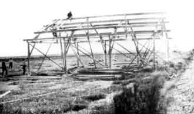
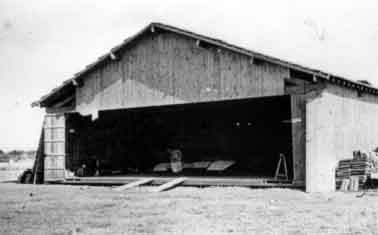

Le premier hangar.
 (Photos B.Jamme) |
 |
| Le premier hangar sera construit en bordure du chemin de Palavas qui mène à Villeneuve. La chaussée n'est pas encore goudronnée et l'accès y est souvent impossible à cause des fréquentes inondations. | |
|
|
|